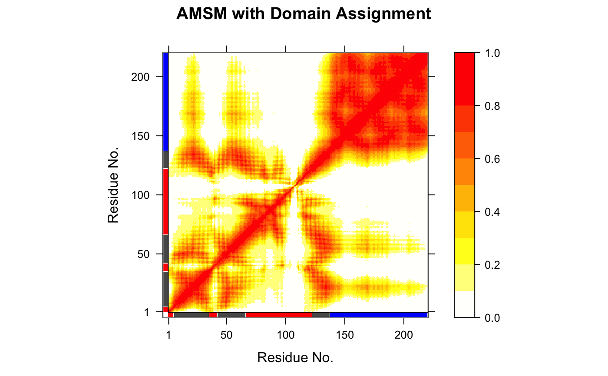

geostas.RdIdentifies geometrically stable domains in biomolecules
geostas(...) # S3 method for default geostas(...) # S3 method for xyz geostas(xyz, amsm = NULL, k = 3, pairwise = TRUE, clustalg = "kmeans", fit = TRUE, ncore = NULL, verbose=TRUE, ...) # S3 method for nma geostas(nma, m.inds = 7:11, verbose=TRUE, ...) # S3 method for enma geostas(enma, pdbs = NULL, m.inds = 1:5, verbose=TRUE, ...) # S3 method for pdb geostas(pdb, inds = NULL, verbose=TRUE, ...) # S3 method for pdbs geostas(pdbs, verbose=TRUE, ...) amsm.xyz(xyz, ncore = NULL) # S3 method for geostas print(x, ...)
| ... | arguments passed to and from functions, such as
|
|---|---|
| xyz | numeric matrix of xyz coordinates as obtained e.g. by
|
| amsm | a numeric matrix as obtained by
|
| k | an integer scalar or vector with the desired number of groups. |
| pairwise | logical, if TRUE use pairwise clustering of the atomic movement similarity matrix (AMSM), else columnwise. |
| clustalg | a character string specifing the clustering algorithm. Allowed values are ‘kmeans’ and ‘hclust’. |
| fit | logical, if TRUE coordinate superposition on identified core atoms is performed prior to the calculation of the AMS matrix. |
| ncore | number of CPU cores used to do the calculation.
|
| verbose | logical, if TRUE details of the geostas calculations are printed to screen. |
| nma | an ‘nma’ object as obtained from function
|
| m.inds | the mode number(s) along which trajectory should be
made (see function |
| enma | an ‘enma’ object as obtained from function
|
| pdbs | a ‘pdbs’ object as obtained from function
|
| pdb | a ‘pdb’ object as obtained from function
|
| inds | a ‘select’ object as obtained from function
|
| x | a ‘geostas’ object as obtained from function
|
This function attempts to identify rigid domains in a protein (or nucleic acid) structure based on an structural ensemble, e.g. obtained from NMR experiments, molecular dynamics simulations, or normal mode analysis.
The algorithm is based on a geometric approach for comparing pairwise
traces of atomic motion and the search for their best superposition
using a quaternion representation of rotation. The result is stored in
a NxN atomic movement similarity matrix (AMSM) describing the
correspondence between all pairs of atom motion. Rigid domains are
obtained by clustering the elements of the AMS matrix
(pairwise=TRUE), or alternatively, the columns similarity
(pairwise=FALSE), using either K-means (kmeans)
or hierarchical (hclust) clustering.
Compared to the conventional cross-correlation matrix (see function
dccm) the “geostas” approach provide
functionality to also detect domains involved in rotational
motions (i.e. two atoms located on opposite sides of a rotating
domain will appear as anti-correlated in the cross-correlation matrix,
but should obtain a high similarity coefficient in the AMS matrix).
See examples for more details.
The current implementation in Bio3D uses a different fitting and clustering approach than the original Java implementation. The results will therefore differ.
Returns a list object of type ‘geostas’ with the following components:
a numeric matrix of atomic movement similarity (AMSM).
a numeric vector of xyz indices used for fitting.
a numeric vector containing the domain assignment per residue.
a numeric vector containing the domain assignment per
atom (only provided for geostas.pdb).
a list of atom ‘select’ objects with indices to corresponding to the identified domains.
Romanowska, J. et al. (2012) JCTC 8, 2588--2599. Skjaerven, L. et al. (2014) BMC Bioinformatics 15, 399. Grant, B.J. et al. (2006) Bioinformatics 22, 2695--2696.
Julia Romanowska and Lars Skjaerven
plot.geostas,
read.pdb, mktrj,
read.ncdf, read.dcd,
nma, dccm.
# \donttest{ # PDB server connection required - testing excluded #### NMR-ensemble example ## Read a multi-model PDB file pdb <- read.pdb("1d1d", multi=TRUE)#> Note: Accessing on-line PDB file## Find domains and write PDB gs <- geostas(pdb, fit=TRUE)#> .. 220 'calpha' atoms selected #> .. 'xyz' coordinate data with 20 frames #> .. 'fit=TRUE': running function 'core.find' #> .. coordinates are superimposed to core region #> .. calculating atomic movement similarity matrix ('amsm.xyz()') #> .. dimensions of AMSM are 220x220 #> .. clustering AMSM using 'kmeans' #> .. converting indices to match input 'pdb' object #> (additional attribute 'atomgrps' generated)## Plot a atomic movement similarity matrix plot.geostas(gs, contour=FALSE)## Fit all frames to the 'first' domain domain.inds <- gs$inds[[1]] xyz <- pdbfit(pdb, inds=domain.inds) #write.pdb(pdb, xyz=xyz, chain=gs$atomgrps) # } if (FALSE) { #### NMA example ## Fetch stucture pdb <- read.pdb("1crn") ## Calculate (vibrational) normal modes modes <- nma(pdb) ## Find domains gs <- geostas(modes, k=2) ## Write NMA trajectory with domain assignment mktrj(modes, mode=7, chain=gs$grps) ## Redo geostas domain clustering gs <- geostas(modes, amsm=gs$amsm, k=5) #### Trajectory example ## Read inn DCD trajectory file, fit coordinates dcdfile <- system.file("examples/hivp.dcd", package = "bio3d") trj <- read.dcd(dcdfile) xyz <- fit.xyz(trj[1,], trj) ## Find domains gs <- geostas(xyz, k=3, fit=FALSE) ## Principal component analysis pc.md <- pca.xyz(xyz) ## Visualize PCs with colored domains (chain ID) mktrj(pc.md, pc=1, chain=gs$grps) #### X-ray ensemble GroEL subunits # Define the ensemble PDB-ids ids <- c("1sx4_[A,B,H,I]", "1xck_[A-B]", "1sx3_[A-B]", "4ab3_[A-B]") # Download and split PDBs by chain ID raw.files <- get.pdb(ids, path = "raw_pdbs", gzip = TRUE) files <- pdbsplit(raw.files, ids, path = "raw_pdbs/split_chain/") # Align structures pdbs <- pdbaln(files) # Find domains gs <- geostas(pdbs, k=4, fit=TRUE) # Superimpose to core region pdbs$xyz <- pdbfit(pdbs, inds=gs$fit.inds) # Principal component analysis pc.xray <- pca(pdbs) # Visualize PCs with colored domains (chain ID) mktrj(pc.xray, pc=1, chain=gs$grps) ##- Same, but more manual approach gaps.pos <- gap.inspect(pdbs$xyz) # Find core region core <- core.find(pdbs) # Fit to core region xyz <- fit.xyz(pdbs$xyz[1, gaps.pos$f.inds], pdbs$xyz[, gaps.pos$f.inds], fixed.inds=core$xyz, mobile.inds=core$xyz) # Find domains gs <- geostas(xyz, k=4, fit=FALSE) # Perform PCA pc.xray <- pca.xyz(xyz) # Make trajectory mktrj(pc.xray, pc=1, chain=gs$grps) }